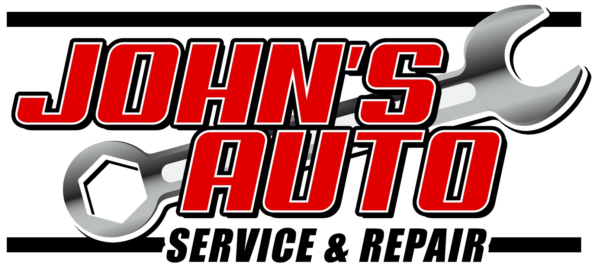
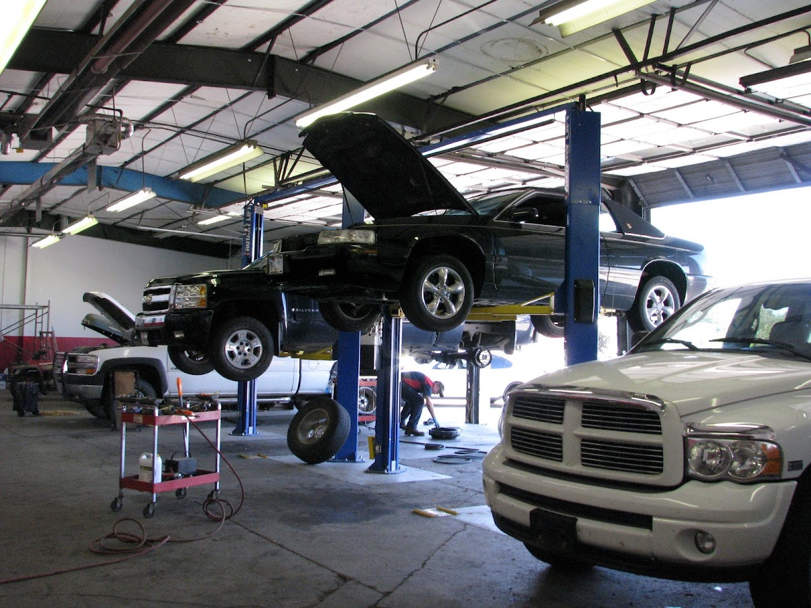
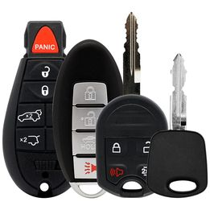
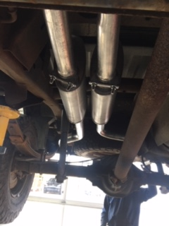
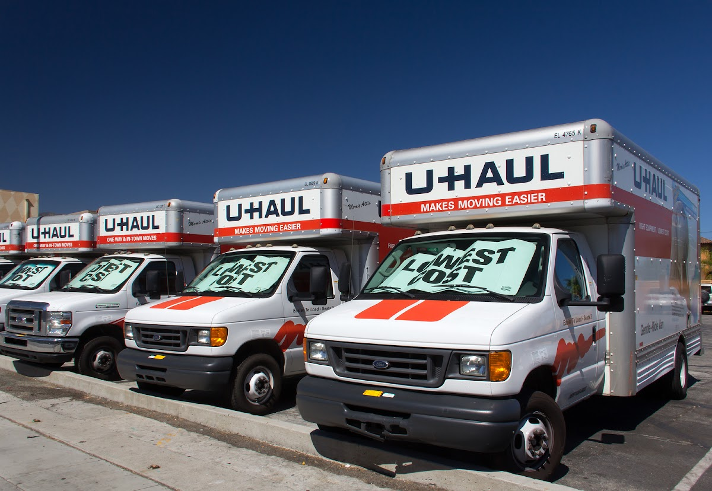
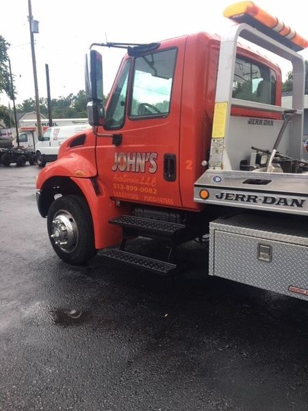
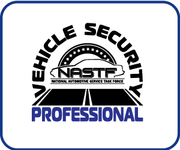

Auto repair & maintenance
Full-service repair and maintenance. The dealer alternative for Warren County drivers.


Warren County since 1998
Full-service repair and 24-hour towing at 255 E. Pike St, Morrow. Shop hours Mon–Fri 8:30 AM–5:30 PM. Saturday by appointment. Closed Sunday.
Same work they publish today, including computer and module programming and U-Haul.
Full-service repair and maintenance. The dealer alternative for Warren County drivers.

Sales, cutting, and programming.

Installation and custom bending.

Full-service U-Haul dealer. Call the shop at 513-494-2132.
New tire sales, installation, and alignment.
On-site computer and module programming, listed on their current site.

24/7
Just call 513-899-0082, day or night. Light local towing from the same shop.
Call Tow 513-899-0082Serving the Warren County, Ohio area since 1998. Up-to-date technology, without the dealer counter.

NASTF member255 E. Pike St, Morrow, OH 45152
Shop 513-494-2132 · Tow 513-899-0082
Mon–Fri 8:30 AM–5:30 PM · Sat by appointment · Sun closed